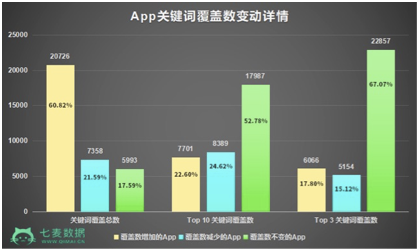
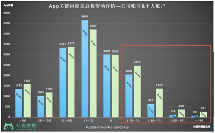
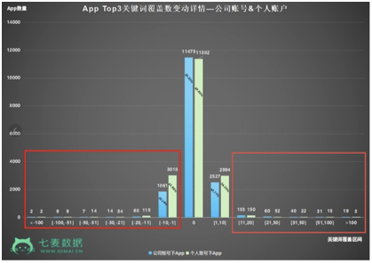
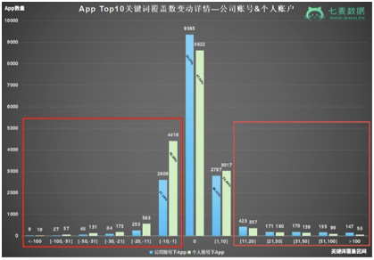
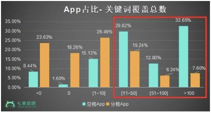
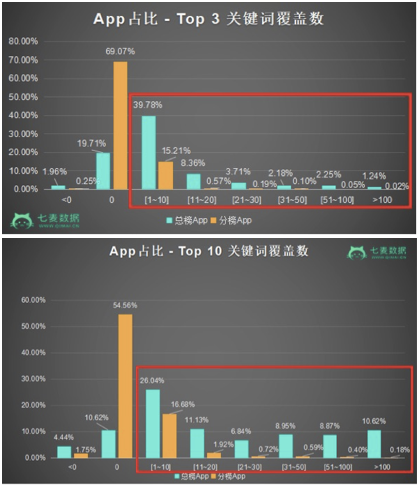
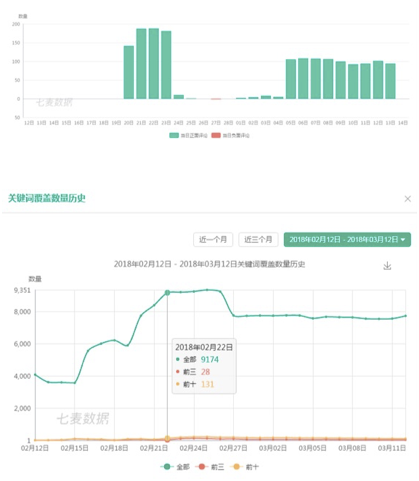
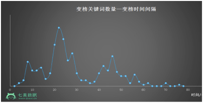

2月末，App Store算法进行了一次重大调整：很多产品并没有优化排名或更新版本等，但关键词数据却出现了明显波动（增多或减少）。群里很多小伙伴应该都有感知。
该现象集中出现在2月22日，而通过数据分析对比发现，其波动范围非常广，中国区App Store的大批量关键词覆盖与排名数据都受到了不同程度的影响。
七麦研究院曾对2月22日的所有分类榜31000余款App作为样本进行对比，发现和2月21日相比关键词覆盖数变化率占比在82.41%以上。其中，关键词覆盖数增加的数量比例达60.82%，减少比例为21.59%。

②主要曝光和获量区间（Top10和Top3）的关键词数量也有较明显提升,其中，Top10关键词数量增加的达7701款，占比22.60%，减少App为8389款，占比24.62%；Top3关键词数量增加的达6066款，占比17.80%；减少的App数量为5154款，占比15.12%。
目前该现象还没有明显恢复，且仍有不断调整的迹象。截至当前，此次算法调整有哪些趋势呢？我们应该重点关注哪些因素呢？下面谈谈我的看法。
1、公司开发者账号成为影响App权重的一大因素
针对上述31000余款app的种类以及关键词覆盖数变动对比，发现：本次调整中，公司开发者账号下的App关键词覆盖与排名增加得更多；而个人开发者账号相比较而言，关键词覆盖与排名受到的负面影响更多。在算法变动中，公司开发者账号成为了影响App权重的一大因素，并间接对排名优化产生影响。
将样本App以公司开发者账号和个人开发者账号（34000余款样本中，公司开发者账号有16266款，占比 47.73%；个人开发者账号有 17811 款，占比 52.27%）进行区分后，分别从“所有关键词”、“Top10关键词”、“Top3关键词”三个维度进行了对比分析。
①从关键词总数上来看：如下图所示，相比2月21日，关键词总覆盖数减少区间内，个人开发者账号下的App数量明显比公司开发者账号下的App数量多，关键词覆盖总数减少超过11的App中，个人开发者账号下的App所占比例更大。

②从Top3和Top10关键词总数上来看：如果大家觉得上图对比不太明显，可以看下方Top3和Top10关键词覆盖总数变动详情图。减少区间（-1以下）中，个人账号下的App数量和公司账号下的App数量对比，相差很悬殊。
A、从Top3关键词总数上来看：
关键词增加数量大于11的App中，公司开发者账号下的App数量高于个人开发者账号下的App数量；且关键词增加数量在0以下，即关键词减少区间在1~100之间的App中，个人开发者账号下的App占比较大。如下图所示

关键词增加数量在11以上的App中，公司开发者账号下的App数量同样多于个人开发者账号下的App数量；而关键词减少数量在1~100之间的App中，个人开发者账号下的App占比也非常大。如下图所示

2、下载量在算法中仍占重要比重
此外，我们还从“进入总榜”和“不在总榜但进入分类榜”两个维度对样本App进行了数据分析，通过计算两类App在不同涨幅区间中的占比发现：App的榜单排名在此次调整中是不可忽略的因素。
例如，在覆盖总量变化的几个区间中，仅进入分类榜的App关键词覆盖数降低、不变、少量增加（1~10）的比例更多；而总榜App关键词覆盖总量增加超过10以上的App比例呈逐渐增多趋势。

除此之外，Top 10/Top 3 关键词覆盖数变化的几个区间中，总榜所受到的正面影响也优于分类榜。

众所周知，下载量、评论、日活、留存等是影响App榜单排名的重要因素，而下载量是主要因素。此次榜单排名更好的App受到正面影响更大，其实可以证明，App下载量，或者说自然新增多的产品在此次算法调整中受到的正向影响较多，下载量在此次算法调整中占重要比重。
3、评论优化权重有所增加
在数据统计和分析过程中发现，本次调整中很多处于相同维度的App，评论优化较好的产品，关键词数量和排名增加的现象更明显。
下面举一个比较明显的例子，大家可以看一下这款产品的评论和关键词覆盖数量变动情况。

保持稳定周期性地对产品做一些真实用户的好评优化，更有利于增加产品权重，且在遇到类似于本次算法调整的时候，产品受到的正向影响的几率会更大，负向影响的几率会更小。
4、苹果对量级（CPSA）的考察时间变长，投放效果延迟
近期关键词排名优化效果出现了延迟现象，12小时候内出现效果的比率降低。很多App优化效果出现在投放后第二天或第三天，有些延迟时间甚至更长！
我们根据抽取的样例进行统计和分析，关键词排名优化后，效果集中出现在20~28小时。

关键词排名优化效果的延迟很可能是苹果对搜索下载量的考察时间增长，针对目前的调整，建议优化某个关键词排名后，观察时间最好延迟1~2天，然后在根据实际情况调整接下来的优化策略。例如：
1.产品进行ASO优化初期，建议每天少量测试多个关键词，缩短关键词投放测试周期，延长关键词优化后的观察时间，重点关键词延长测试时间至2-3天；
2.关键词排名有明显提升后，再进行下阶段的优化，提升关键词排名至目标排名；
3.排名提升不明显的关键词暂时放弃，或隔段时间再进行测试投放。
最后还有4.3问题解决方案
基础知识：
1.苹果的审核，分为机器审核和人工审核；目前大多数4.3是死在机器审核阶段。
2.苹果对开发者帐号会进行权重管理；权重越低的帐号，审核越严格；同样的包，可能在权重高的帐号上就能过，在权重低的帐号上就是4.3；
3.目前苹果还只是对新提交应用进行相似应用的检测（包括新包和升级包）；对新包的检测严厉程度和升级包相仿（还是看帐号权重）。预判，随后会对之前已上架的包也进行相似应用检测，只是时间的早晚；
规避4.3的重心：
切断当前马甲包与以往马甲包的所有相似性关联；
相似性关联包括：1.ipa包特征；2.开发者帐号；3.打包电脑；4.上传IP；5.材料相似；
分项细述：
1.ipa包特征：包括有代码相似性，资源相似性；
代码相似性解决办法： a. 已有代码的混淆（改类名、改函数名）b. 添加一些无用的代码；
资源相似性解决办法：a. 资源改名；b. 适当添加一些无用的资源；
2.开发者帐号：两个马甲包不要关联到同一个开发者帐号的信息；比如打包时关联。
3.打包电脑：有条件的最好用不同的MAC来打包（每台MAC上最好打包马甲包不要超过5个）
4.上传IP：上传马甲包时，IP不要跟其他马甲包的IP相同；
5.材料相似：itu后台材料如宣传图，ICON，版权人不要出现相同；
【注：即使是前边没审核过的包，也不要跟他们有关联。尤其是前边被4.3拒绝的包，更不能跟他们有相似性】
以上的能做到，基本大部分马甲可以顺利通过4.3这道坎了。更高级的技巧，待后续整理。关于被拒大礼包问题，就是一个字怼，不能怂。怂了账号也就废了与其这样不如放手一搏。纹桃科技致力于棋牌游戏开发15年，拥有大量成功案例。
想开发一款迅速盈利的棋牌游戏，欢迎咨询热线电话：18711739336

识别二维码咨询更多棋牌问题

游戏产品
PRODUCTS

售后服务
SERVICE

技术支持
TECHNOLOGY

运营指导
OPERATING